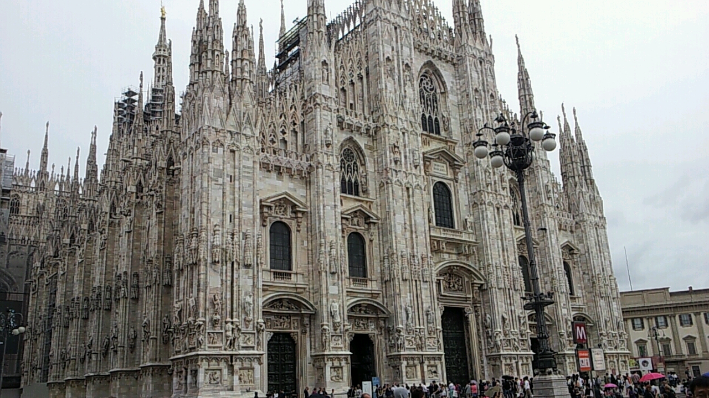
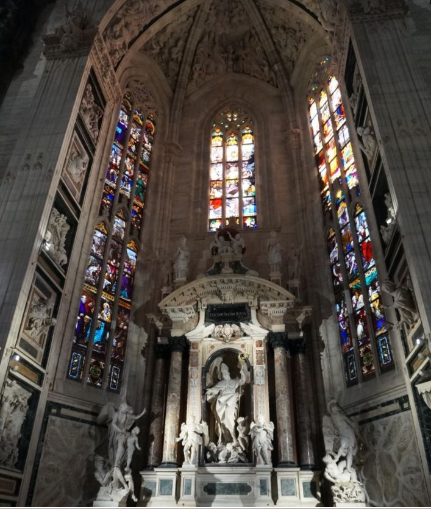

- 프랑스에서의 여행
- 이탈리아에서의 여행

두오모 성당
프랑스에서 멋진 여행을 하고 넘어온 곳은 이탈리아였다.
이탈리아에서는 일정이 그렇게 많지가 않았고, 예술품이나 문화재가 비교적 적은 밀라노 지역으로 왔기 때문에 사실상 이탈리아는 쇼핑을 하기 위한 곳이었다.
하지만 당시 고등학생인 나는 밀라노에 위치한 명품상점 보다는 상점가에서 나오면 바로 위치해 있는 두오모 성당에 마음을 빼앗겼다.
한눈에 보기에도 압도적인 크기를 가진 두오모 성당 축구장 면적의 1.5배를 가지고 있다.
태어나서 이정도 크기의 건축물을 처음 본 나는 입장권을 사서 안으로 들어갔고 밖에서 본 건물 외관은 크기에 중점을 두었다면
건물 내부는 디테일에 중점을 두었다는걸 느낄 수 있었다.

구경하기 바쁜 탓에 사진은 많이 못찍었지만, 내가 들어갔을때 안에서는 미사중이었고
덕분에 조용히 내부를 구경할 수 있었다.
정말 살아움직일 것만 같은 조각상들과 색감이 너무 아름다운 벽면을 다 감상하고 나서야 아쉬움없이 성당을 떠날 수 있었다.